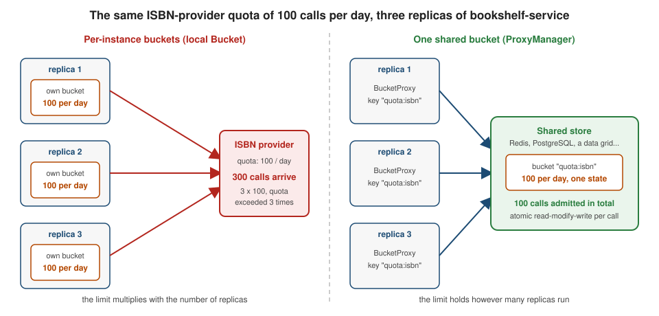

Bucket4j: Distributed Rate Limiting
|
This content was generated with the assistance of AI and should be verified against the official documentation before being relied on in production. |
A local Bucket limits one JVM. As soon as a service runs as several replicas, which is the normal case on Kubernetes, a limit
that must hold for the whole service needs one shared state. Bucket4j solves this with a ProxyManager: the state of every
bucket lives in an external store, and the application holds a cheap handle, the BucketProxy, that sends each operation to
that store. The methods are the ones of the Bucket API; what is new is how
the store is chosen, how an operation is made atomic, and what can go wrong on the network.
It was written against Bucket4j 8.21.0, Spring Boot 4.1.x, Spring Framework 7.0.x and Java 21 and verified on 4 October 2026. Every example was run against 8.21.0: Redis 7 and PostgreSQL 17 in Testcontainers for the distributed behaviour, and a controllable clock where time matters. The backend-specific builders are on the backends page; this page uses Redis through Lettuce because it is the most common choice, and PostgreSQL where a transaction changes the picture.
Why local limits are not enough
The Bookshelf service calls an ISBN metadata provider that allows 100 calls per day for the whole account. With one instance, a local bucket of 100 enforces that. With three replicas, each replica has its own bucket, the three buckets are independent, and the provider sees up to 300 calls. The same arithmetic applies to every per-client limit: a client that is allowed 20 requests per minute gets 60 when the load balancer spreads its requests over three replicas, and the ratio changes whenever autoscaling changes the replica count.

Running both variants against a real Redis shows the difference. Three simulated replicas each try 150 times against a daily quota of 100:
// per instance: every replica has its own bucket
int admitted = 0;
for (int replica = 0; replica < 3; replica++) {
Bucket local = Bucket.builder()
.addLimit(limit -> limit.capacity(100).refillIntervally(100, Duration.ofDays(1)))
.build();
for (int i = 0; i < 150; i++) {
if (local.tryConsume(1)) admitted++;
}
}
// admitted == 300
// shared: every replica builds a ProxyManager on the same Redis and uses the same key
BucketConfiguration quota = BucketConfiguration.builder()
.addLimit(limit -> limit.capacity(100).refillIntervally(100, Duration.ofDays(1)))
.build();
int shared = 0;
for (int replica = 0; replica < 3; replica++) {
ProxyManager<String> proxyManager = Bucket4jLettuce.casBasedBuilder(redisClient).build()
.withMapper(key -> key.getBytes(StandardCharsets.UTF_8));
BucketProxy bucket = proxyManager.builder().build("quota:isbn", () -> quota);
for (int i = 0; i < 150; i++) {
if (bucket.tryConsume(1)) shared++;
}
}
// shared == 100A shared limit has a price: every consumption becomes a network call, the store becomes a dependency of the request path, and the clocks of several machines now take part. The rest of the page is about managing that price. When the limit only needs to be approximately right, or when each replica can be given a fixed share of the quota, a local bucket is simpler and faster; the Resilience4j RateLimiter is the in-process alternative.
ProxyManager and BucketProxy
A ProxyManager<K> is built once per store (one Redis database, one JDBC table, one grid cache) by a backend-specific builder
such as Bucket4jLettuce.casBasedBuilder(…). Buckets inside it are told apart by a key of type K. Once built, every backend
is used the same way.
| Method | Meaning |
|---|---|
|
A |
|
A |
|
|
|
Deletes the bucket from the store |
|
Whether |
|
Whether the backend can expire buckets (see client-side settings) |
|
An |
|
A view of the manager with a different key type, for example |
A BucketProxy extends Bucket: tryConsume, tryConsumeAndReturnRemaining, addTokens, replaceConfiguration,
asBlocking() and the rest work as for a local bucket. It adds toListenable(BucketListener) and
getOptimizationController(). A proxy holds no bucket state, so building one per request is fine and keeps no memory on the
client; the exception is a proxy created with an optimization, which is stateful and must be kept (see optimizations below).
ProxyManager<String> proxyManager = Bucket4jLettuce.casBasedBuilder(redisClient)
.expirationAfterWrite(ExpirationAfterWriteStrategy.basedOnTimeForRefillingBucketUpToMax(Duration.ofMinutes(5)))
.build()
.withMapper(key -> key.getBytes(StandardCharsets.UTF_8));
BucketConfiguration free = BucketConfiguration.builder()
.addLimit(limit -> limit.capacity(20).refillGreedy(20, Duration.ofMinutes(1)))
.build();
proxyManager.getProxyConfiguration("api:alice"); // Optional.empty(): not created yet
BucketProxy bucket = proxyManager.getProxy("api:alice", () -> free);
bucket.tryConsume(5); // the bucket is created in Redis here
proxyManager.getProxyConfiguration("api:alice"); // present, capacity 20
proxyManager.removeProxy("api:alice"); // gone againAgainst Redis, isAsyncModeSupported() and isExpireAfterWriteSupported() both return true; against the PostgreSQL
select-for-update manager async is false and expiry is supported. Source:
Bucket4j reference: ProxyManager and
BucketProxy.
The asynchronous view
proxyManager.asAsync() returns an AsyncProxyManager<K> whose getProxy, builder, getProxyConfiguration and removeProxy
return CompletableFutures, and whose AsyncBucketProxy mirrors the consumption methods with CompletableFuture results
(tryConsume, tryConsumeAndReturnRemaining, estimateAbilityToConsume, addTokens, reset, replaceConfiguration,
getAvailableTokens, asScheduler(), asVerbose()). The configuration supplier also returns a future. It is the right tool
for WebFlux and for anything that must not park a thread on a network call. There is no asynchronous blocking: waiting for
tokens is asScheduler().
AsyncProxyManager<String> asyncManager = Bucket4jLettuce.casBasedBuilder(redisClient).build()
.withMapper((String key) -> key.getBytes(StandardCharsets.UTF_8))
.asAsync();
AsyncBucketProxy bucket = asyncManager.builder()
.build("async:k", () -> CompletableFuture.completedFuture(quota)); // quota: capacity 3
CompletableFuture<Boolean> first = bucket.tryConsume(1);
CompletableFuture<ConsumptionProbe> probe = bucket.tryConsumeAndReturnRemaining(1);Four calls on a bucket of capacity 3 return true, true, true, false. Which backends support async is in the table on
the backends page: for example Lettuce, Redisson, Vert.x, GLIDE, MongoDB async,
Couchbase, Memcached, Cassandra and Ignite do, while Jedis, the JDBC managers, JCache, Geode, Hot Rod and Hazelcast
compare-and-swap do not. Source: Bucket4j reference: Asynchronous API.
The reference example still uses javax.servlet and the deprecated InfinispanProxyManager constructor; on Spring Boot 4 the
interface is jakarta.servlet.Filter and Infinispan managers come from Bucket4jInfinispan builders.
RemoteBucketBuilder
proxyManager.builder() returns a RemoteBucketBuilder<K>. Everything it sets applies to the proxies it builds, not to the
stored bucket.
| Method | Meaning |
|---|---|
|
Creates the proxy. The |
|
What to do when the stored state disappeared: |
|
Reduces round trips, at a cost in accuracy for some optimizations |
|
Replaces the stored configuration when the supplied version is newer |
|
A |
|
Another key type, as on the manager |
Recovery strategies
If the state of a bucket vanishes between two calls (the entry was evicted, the cache lost a partition, someone deleted the
key), the next operation finds no bucket. With RECONSTRUCT the proxy silently creates it again from the supplier, with a
full bucket: availability is favoured and the limit can be exceeded after such an event. With
THROW_BUCKET_NOT_FOUND_EXCEPTION the operation fails with BucketNotFoundException, which the application can map to a
decision. Both behaviours were observed on Redis: after removeProxy the reconstructing proxy reported 5 of 5 tokens, and the
strict one threw.
BucketProxy lenient = proxyManager.builder()
.withRecoveryStrategy(RecoveryStrategy.RECONSTRUCT)
.build("rec:a", () -> config);
BucketProxy strict = proxyManager.builder()
.withRecoveryStrategy(RecoveryStrategy.THROW_BUCKET_NOT_FOUND_EXCEPTION)
.build("rec:b", () -> config);defaultRecoveryStrategy(…) on the backend builder sets the same choice for every proxy. Source:
Bucket4j reference: FAQ.
How an operation is made atomic
Several replicas can consume from the same bucket at the same instant, so the read-modify-write of the bucket state must be atomic. Bucket4j does not pick one mechanism; each backend module uses what its store offers.
| Model | How it works | Backends |
|---|---|---|
Compare-and-swap |
The client reads the state, applies the command locally and writes the new state only if the stored value is still the one it read. On a conflict it re-reads and tries again. |
Redis (all five clients), MongoDB, Couchbase, Memcached, Cassandra (lightweight transactions), Geode, Hazelcast
|
Entry processor |
The command is serialized and executed on the member that owns the key, under the grid’s per-key atomicity |
JCache, Hazelcast |
Server-side job |
A compute job, function or server task applies the command next to the data |
Ignite 3 (inside a |
Row or key lock |
One transaction selects the row |
PostgreSQL, MySQL, MariaDB, Oracle, SQL Server, DB2, Hazelcast |
Per-key compute (in-process) |
The command runs inside |
Caffeine |
Compare-and-swap in Redis
Redis has no atomic "apply a rate-limit command" operation, so Bucket4j uses compare-and-swap. The state is a binary value
under the bucket key. A consumption is two commands: read the value, then a small Lua script run with EVAL that writes the
new value, with the TTL, only if the stored value still equals the one that was read. The script returns 1 on success and 0 on
a mismatch; the first creation of a bucket uses a separate set-if-absent script.
Two consequences follow. A consumption costs at least two round trips, and a hot key makes losers retry. When a command leaves
the state unchanged no write is attempted. Source:
Bucket4j reference: how Compare&Swap works in Redis and the
AbstractCompareAndSwapBasedProxyManager source at 8.21.0.
Client-side settings
The settings that control how a replica talks to the store are methods of the backend builder; they live in ClientSideConfig
and are shared by every proxy the manager hands out. The reference documents them through withClientSideConfig(…), which
does not exist on the 8.21.0 builders (it survives only on the deprecated SQLProxyConfigurationBuilder), so the builder
methods below are the way to set them.
| Method | Default | Effect |
|---|---|---|
|
none |
Upper bound for one operation. Enforcement depends on the backend (a native timeout, or a timeout on the returned future).
Exceeding it throws |
|
unset: retry compare-and-swap indefinitely |
Limit on CAS attempts; exceeding it throws |
|
none |
Decides after every failed CAS whether to stop, retry now or retry after a delay; when set, |
|
backend dependent (see clock skew) |
The clock the client uses to compute refills. It must return |
|
none |
Expiry of idle buckets, for backends that support it |
|
the latest ( |
Serializes state in the format of an older version, for rolling upgrades with mixed library versions |
|
|
Listener for every proxy of the manager |
|
|
See above |
|
|
Run store calls on the caller’s thread, or on an executor ( |
Request timeout and retries
ProxyManager<byte[]> proxyManager = Bucket4jLettuce.casBasedBuilder(redisClient)
.requestTimeout(Duration.ofSeconds(2))
.maxRetries(10)
.build();A hot key can make maxRetries fail requests that the bucket would have admitted: with maxRetries(2) and 32 threads
hammering one key on a local Redis, 1764 of 2000 calls failed with BucketExecutionException: CAS operation failed after 2
retry attempts. An attempt count is exhausted in milliseconds. Prefer a time budget with randomized delays, which
RetryStrategies provides in its single factory:
ProxyManager<byte[]> proxyManager = Bucket4jLettuce.casBasedBuilder(redisClient)
.retryStrategy(RetryStrategies.exponentialBackoffWithJitter(
Duration.ofMillis(1), // base delay: about one round trip
Duration.ofMillis(20), // maximum delay of a single backoff
Duration.ofMillis(150))) // budget: total time spent waiting before giving up
.requestTimeout(Duration.ofMillis(250))
.build();The delay before attempt n is drawn uniformly between half of min(base * 2^(n-1), max) and that value, and the strategy
stops when the budget is spent. A custom strategy is a lambda over RetryMetadata (getAttemptNumber(), getBucketKey(),
getElapsedTimeNanos()) returning RetryDecision.stop(), retryImmediately() or retryAfter(Duration). With a 150 ms budget
nine threads still hammering one key in a tight loop produced CAS operation failed after 12 retry attempts; the budget is a
bound on the damage, not a way to make a hot key scale. The cure for a hot key is the batching optimization below, or a
different key design. A request timeout of one nanosecond fails every call with TimeoutException ("Violated timeout while
waiting for redis future"), which shows where the exception comes from. Source:
Bucket4j reference: Request timeout,
max retries and
custom retry strategy;
RetryStrategies.java at 8.21.0.
Expiration
Idle buckets would otherwise stay in the store forever. ExpirationAfterWriteStrategy has three factories:
-
none(): never expire (the default; fine for a few well-known keys, a leak for per-client keys); -
fixedTimeToLive(Duration): a fixed TTL after every write; if it is much shorter than the refill period, consumed tokens are forgotten early and the bucket over-admits; -
basedOnTimeForRefillingBucketUpToMax(Duration keepAfterRefill): the TTL is the time needed to refill the bucket plus the given duration, so a bucket is dropped exactly when it would be full anyway. This is the right choice for almost every per-client limit; use at least a few seconds ofkeepAfterRefill, because recreating a bucket costs an extra round trip.
Not every backend can expire buckets: JCache, Geode, Ignite 2 and Ignite 3 have no per-entry expiration in Bucket4j
(configure expiry in the store itself), and Hazelcast compare-and-swap has no support, so a builder given a strategy for
such a backend refuses it. JDBC managers compute an
expires_at column but never delete rows (see the backends page). Source:
Bucket4j reference: Expiration policy.
Versions, listeners and the other settings
backwardCompatibleWith(Versions.v_8_10_0) makes a replica write state in the 8.10 format, which is what you want while a
rolling deployment mixes old and new library versions; leave it at the latest otherwise. defaultListener(…) receives
events of every proxy, which is the hook for metrics; see observability. A
SimpleBucketListener attached as the default listener counted 2 consumed and 1 rejected tokens for a bucket of capacity 2
after three tryConsume(1) calls. Source:
Bucket4j reference: Default
listener on a ProxyManager.
Designing keys
The key is the only thing that distinguishes one limit from another, and it decides memory, contention and fairness.
| Key | Cardinality | Notes |
|---|---|---|
|
one |
A hot key shared by every replica: use batching and a generous retry budget, or accept that it is the bottleneck |
|
one per client |
The usual per-client limit; expire idle buckets with |
|
one per authenticated user |
Bounded by the user base; prefer it over IP for logged-in traffic |
|
unbounded |
Every scanner creates a bucket; expiry is mandatory, and the key must be the real client address (see the manual Spring Boot integration) |
|
tenants times routes |
Several limits per client are several buckets; one bucket with several bandwidths is cheaper when the limits apply to the same requests |
Prefix keys with the kind of limit, so that a key space shared with other uses of the same Redis (see
Redis use cases and patterns) cannot collide. For Redis, withMapper lets
the application work with String keys while the manager is keyed by byte[]. A hot key (one bucket hit by every request)
serializes on the store; the remedies are batching, splitting the bucket per replica with a share of the quota, or moving that
limit to the edge. Bucket4j keeps nothing per bucket on the client, so cardinality only costs memory in the store.
Implicit configuration replacement
A bucket stores its configuration with its state. Passing a different supplier to getProxy for an existing bucket changes
nothing, so editing a plan in a YAML file and restarting the service leaves every stored bucket on the old limits. Replacing
configurations explicitly would mean enumerating the buckets, which is expensive in Redis, where there is no table to scan.
Implicit configuration replacement solves this with a version number. The proxy is built with a desired version and a
TokensInheritanceStrategy; if the stored version is lower, the stored configuration is replaced when the proxy is first used,
inheriting tokens by the chosen strategy, and no other code is needed.
BucketProxy v1 = proxyManager.builder()
.withImplicitConfigurationReplacement(1, TokensInheritanceStrategy.PROPORTIONALLY)
.build("impl:plan", () -> capacity20); // capacity 20; 10 tokens consumed, 10 left
BucketProxy sameVersion = proxyManager.builder()
.withImplicitConfigurationReplacement(1, TokensInheritanceStrategy.PROPORTIONALLY)
.build("impl:plan", () -> capacity200); // version 1 again: nothing changes, 10 tokens
BucketProxy v2 = proxyManager.builder()
.withImplicitConfigurationReplacement(2, TokensInheritanceStrategy.PROPORTIONALLY)
.build("impl:plan", () -> capacity200); // replaced: capacity 200, 100 tokens (10/20 of 200)Running it gave exactly those values (10, 10, 100); an instance that still runs the old version 1 afterwards sees 100 tokens
and does not downgrade the bucket, and a plain getProxy with the old supplier is ignored. The version is a long you
control; tie it to something that changes when limits change, such as a number in the plan file or a build property. Two
details matter. Inheritance follows the rules of replaceConfiguration on
the Bucket API page: bandwidths are matched by id, never by
position (a single null-id bandwidth on each side is paired with the other), and a new bandwidth that has an id the old one
lacks is treated as a different bandwidth and starts from its initial tokens, so give every bandwidth the same stable id on
both sides. And the replacement happens in each store only when a proxy with the newer version is first used
for that key, so rarely used keys keep the old limits until they are touched. Source:
Bucket4j reference: Implicit configuration replacement.
Optimizations
Every consumption is a round trip. withOptimization(…) trades some of that cost for accuracy. The built-in optimizations
are documented only in the Javadoc of 8.21.0; the factories are in Optimizations.
| Optimization | What it does | Accuracy |
|---|---|---|
|
Combines concurrent requests to the same bucket in one replica into one request to the store |
Exact: no loss of accuracy |
|
Serves requests locally until |
Can over-consume: other replicas do not see the local consumption until the sync |
|
Like delaying, and estimates the consumption rate of the whole cluster to hold some tokens back |
Can over-consume, and can under-consume when the prediction is wrong |
|
When the store has no tokens, answers locally until the first token is due to be refilled; built on batching |
Can under-consume after |
|
Serves locally until the application calls |
Depends entirely on how often you sync |
Observed against Redis for a bucket of 1000 tokens: with delaying(new DelayParameters(100, Duration.ofSeconds(10))), after
50 local tryConsume(1) calls another proxy of the same key still saw 999 tokens (the first call is synchronized; the other 49
were not), and after syncImmediately() it saw 950. With batching(), 200 tryConsume(1) calls from 16 threads were all
admitted and the store showed exactly 800 left. SkipSyncOnZeroOptimization counted 10 skipped synchronizations for 10
rejected calls on an exhausted bucket. A ManuallySyncingOptimization proxy that consumed 30 tokens was visible to others as
999 until syncImmediately() made it 970.
BucketProxy isbnBucket = proxyManager.builder()
.withOptimization(Optimizations.batching())
.build("quota:isbn", () -> isbnQuota); // keep this object
boolean allowed = isbnBucket.tryConsume(1);
BucketProxy approximate = proxyManager.builder()
.withOptimization(Optimizations.delaying(new DelayParameters(100, Duration.ofSeconds(10))))
.build("search:global", () -> searchQuota);
approximate.getOptimizationController().syncImmediately();The reuse rule: a proxy built with an optimization holds local state (batched requests, unsynchronized tokens). Build it
once and share it. Building one per request throws that state away, loses the unsynchronized tokens and gets no benefit. A
proxy without optimization has no state and can be rebuilt freely. Which optimization to use is a statement about how much
over-admission you can accept: batching is always safe; delaying and predicting are for limits where a few percent error is
acceptable (a daily quota of millions of calls) and wrong for a limit like login attempts. Source: Optimizations.java,
DelayParameters.java, PredictionParameters.java and the optimization classes at 8.21.0; the reference does not describe
them.
Clock skew
A refill is computed from elapsed time, so the clock that produces the time matters. The reference does not say which clock is used; the 8.21.0 source does:
-
Compare-and-swap, lock-based and JDBC select-for-update managers default
clientClocktoTimeMeter.SYSTEM_MILLISECONDS: the wall clock of the application JVM. Each replica computes refills with its own clock. -
Entry-processor and server-side backends use the client time only if
clientClock(…)was set; otherwise the command runs on the grid member and uses that member’sSystem.currentTimeMillis(): the server’s clock.
With replicas on machines whose clocks differ, a compare-and-swap bucket sees time jump between replicas. Two proxies on the
same Redis bucket, one with a clock 30 seconds ahead, drained a bucket of 10 tokens that refills 10 per minute: the replica
with the correct clock saw 0 tokens, the replica 30 seconds ahead saw 5. In other words a skewed replica refills early (or
late) by the size of its skew, which for a per-minute limit is large and for a per-day limit is negligible. Keep clocks
synchronized with NTP, remember that a skew comparable to the time one token takes to refill is already visible, and prefer a
server-side backend (or an explicit clientClock that reads one trusted time source) when exact timing across machines
matters. In tests, a controllable clock makes refill deterministic:
ManualClock clock = new ManualClock(); // isWallClockBased() returns true: clientClock rejects any other clock
ProxyManager<String> proxyManager = Bucket4jCaffeine.<String>builderFor(Caffeine.newBuilder().maximumSize(100))
.clientClock(clock)
.build();
BucketProxy bucket = proxyManager.getProxy("k", () -> tenPerMinute);
bucket.tryConsume(10);
clock.advance(Duration.ofSeconds(30));
bucket.getAvailableTokens(); // 5Source: AbstractProxyManager.getClientSideTime() and AbstractProxyManagerBuilder.clientClock at 8.21.0. The clock must be
wall-clock based: clientClock throws IllegalArgumentException ("Trying to use not wall-based clock … in distributed
environment") for a TimeMeter whose isWallClockBased() returns false, such as TimeMeter.SYSTEM_NANOTIME or the local-only
test clock on the Bucket API page. Use the ManualClock from
the testing page, which returns true.
Latency and throughput
The cost of a limit check is network time. A compare-and-swap check is two round trips (read, then the conditional write), plus more on a conflict; an entry-processor or server-side backend needs one; a JDBC check is one transaction of several statements. Per request that is typically a fraction of a millisecond to a few milliseconds within a data centre, and tens of milliseconds across regions, which is why the store must be in the same region as the service. Throughput per key is bounded by one round trip per consumption, because operations on the same key are serialized; throughput across keys scales with the store. So a limit shared by every request in the service (the ISBN quota) is the first one to need batching, while per-client limits rarely do. A rejected request still pays the round trip; if hostile traffic is a concern, reject cheaply earlier (at the edge, or with a small local bucket in front, see Resilience4j versus Bucket4j) so the store only sees traffic that deserves it.
The Bookshelf, shared across replicas
The Bookshelf limits two things across all replicas: the outbound ISBN quota of 1000 calls per day, and the per-API-key plans
(free 20 per minute, a five-token search endpoint). Both live in Redis, reached through one ProxyManager.
@Configuration(proxyBeanMethods = false)
class DistributedRateLimitConfig {
@Bean(destroyMethod = "shutdown")
RedisClient redisClient(@Value("${spring.data.redis.host:localhost}") String host,
@Value("${spring.data.redis.port:6379}") int port) {
return RedisClient.create(RedisURI.create(host, port));
}
@Bean
ProxyManager<String> proxyManager(RedisClient redisClient) {
return Bucket4jLettuce.casBasedBuilder(redisClient)
.expirationAfterWrite(ExpirationAfterWriteStrategy
.basedOnTimeForRefillingBucketUpToMax(Duration.ofMinutes(10)))
.requestTimeout(Duration.ofMillis(250))
.retryStrategy(RetryStrategies.exponentialBackoffWithJitter(
Duration.ofMillis(1), Duration.ofMillis(20), Duration.ofMillis(150)))
.defaultRecoveryStrategy(RecoveryStrategy.RECONSTRUCT)
.build()
.withMapper(key -> key.getBytes(StandardCharsets.UTF_8));
}
}Spring Boot does not create a bare RedisClient bean (its Lettuce auto-configuration builds a LettuceConnectionFactory), so
the bean above is defined here; the manual-integration page shows the full wiring and the host and port come from
spring.data.redis.* as described in configuration and profiles.
@Service
class RateLimits {
static final long PLAN_VERSION = 3;
private final ProxyManager<String> proxyManager;
private final BucketProxy isbnBucket;
private final BucketConfiguration isbnQuota = BucketConfiguration.builder()
.addLimit(limit -> limit.capacity(1_000).refillIntervally(1_000, Duration.ofDays(1)))
.build();
RateLimits(ProxyManager<String> proxyManager) {
this.proxyManager = proxyManager;
this.isbnBucket = proxyManager.builder()
.withOptimization(Optimizations.batching()) // one hot key: batch, build once, reuse
.build("quota:isbn", () -> isbnQuota);
}
boolean tryAcquireIsbnCall() {
return isbnBucket.tryConsume(1);
}
ConsumptionProbe tryConsume(String apiKey, Plan plan, long tokens) {
return proxyManager.builder()
.withImplicitConfigurationReplacement(PLAN_VERSION, TokensInheritanceStrategy.PROPORTIONALLY)
.build("plan:" + apiKey, plan::configuration)
.tryConsumeAndReturnRemaining(tokens);
}
}Three RateLimits objects, each with its own ProxyManager as three replicas would have, were driven by nine threads trying
400 ISBN calls each; exactly 1000 were admitted. For a free-plan key, a search costing 5 tokens returned 15 remaining on the
first replica and 10 on the second; after the third and fourth searches the fifth was rejected by whichever replica handled
it, with a positive getNanosToWaitForRefill() of about 15 seconds as the Retry-After. The same shared quota against
PostgreSQL (Bucket4jPostgreSQL.selectForUpdateBasedBuilder(dataSource), three managers, 12 worker threads trying 100 times
each) admitted exactly 1000. How a failing store changes the decision for an HTTP request, fail open or fail closed, is on
the manual Spring Boot integration page.
Distributed checklist
The reference’s checklist, in the terms of this page:
-
Exceptions are yours to handle. Network failures surface as unchecked exceptions from
tryConsume. Decide per limit: log and let the request through (fail open) or rethrow (fail closed). Never let it be an accident. -
Configure backups. Whether bucket state survives a node failure is a setting of your store (Redis persistence and replicas, grid backups, database replication), not of Bucket4j. After a loss,
RECONSTRUCThands out full buckets. -
Retention is your job. Per-client keys accumulate: set a maximum size on the store and an expiration strategy, preferably
basedOnTimeForRefillingBucketUpToMax. Redis eviction policy is covered in Redis architecture, keyspace and eviction. -
High availability must be tested. Bucket4j relies on the store for it; kill the store in a test and observe the behaviour (see testing Bucket4j).
-
Bound every call with
requestTimeoutand a retry budget, so a slow store cannot hold request threads.
The complete list, with the production anti-patterns, is on the production checklist. Source: Bucket4j reference: Distributed checklist.
Frequently asked questions
Is it safe for two replicas to create the same bucket at once? Yes. Creation is an atomic create-if-absent (a set-if-absent script in Redis, an insert that may fail in SQL); the loser continues with the bucket the winner created, and the supplier of the loser is not used.
Does the ProxyManager keep buckets in my JVM’s memory? No. It retains nothing about buckets; a proxy is a pointer. Memory
grows in the store, not in the application.
Can I keep a BucketProxy and reuse it? Yes for a few well-known buckets, as long as you understand that an optimization
makes the proxy stateful. For many buckets (per user, per IP) build the proxy per request.
Why did my new limit not apply? Because the stored configuration wins over the supplier. Use implicit configuration
replacement or replaceConfiguration.
Can I change the key type? Yes: withMapper on the manager or on the builder, for example String over byte[] for Redis.
Source: Bucket4j reference: FAQ.
Pitfalls
| Pitfall | What happens | Fix |
|---|---|---|
A local |
The limit is multiplied by the replica count |
Use a |
No |
Under contention CAS retries without bound and request threads pile up behind a slow store |
Set a time-budget |
|
On a hot key the attempts are spent in milliseconds: 1764 of 2000 calls failed with |
Use |
Changing a plan in YAML and restarting |
Stored buckets keep the old limits |
|
A new proxy with an optimization per request |
The unsynchronized tokens are lost and the optimization gains nothing |
Build once and reuse |
|
Other replicas over-admit until the sync |
Use |
No expiration for per-client or per-IP keys |
The store fills with dead buckets |
|
Replica clocks that drift |
Compare-and-swap replicas refill early or late by the skew (30 seconds ahead refilled 5 tokens of a 10 per minute bucket) |
NTP, or a trusted |
|
A lost entry becomes a full bucket |
|
|
Deprecated in 8.21.0 |
|
Following |
The method does not exist on the 8.21.0 builders |
Use |
What changed
-
8.5.0:
addLimit(limit → …)replacedBandwidth.simple/classicfor every bucket, local or distributed. -
8.17 to 8.21 changed mostly the distributed side: the
Bucket4jXxxbuilder entry points are the supported way to create proxy managers (several direct constructors, such as those ofCaffeineProxyManagerandInfinispanProxyManager, are deprecated), the builders expose the client-side methods used above, and new modules arrived: Vert.x in 8.17.0, Couchbase in 8.18.0, Geode in 8.20.0, and in 8.21.0 Cassandra, Memcached, Ignite 3, Infinispan 15, Coherence 21 and thebucket4j_jdk17-bom. The 8.21.0 release notes list the compare-and-swap retry mechanism (maxRetries,retryStrategy), Redis Sentinel support through Lettuce and Geode support. -
Redis: the
bucket4j_jdk17-redisaggregator stopped at 8.14.0; usebucket4j_jdk17-redis-commonplus one client module. -
The full list, with the places where the reference and the source disagree, is on migration and what’s changed.
References
-
Request timeout, max retries for CAS operations and custom retry strategy
-
Bucket4j distributed proxy sources at 8.21.0 (
ProxyManager,AsyncProxyManager,RemoteBucketBuilder,AbstractProxyManagerBuilder,RetryStrategies,RecoveryStrategy,optimization/Optimizations)